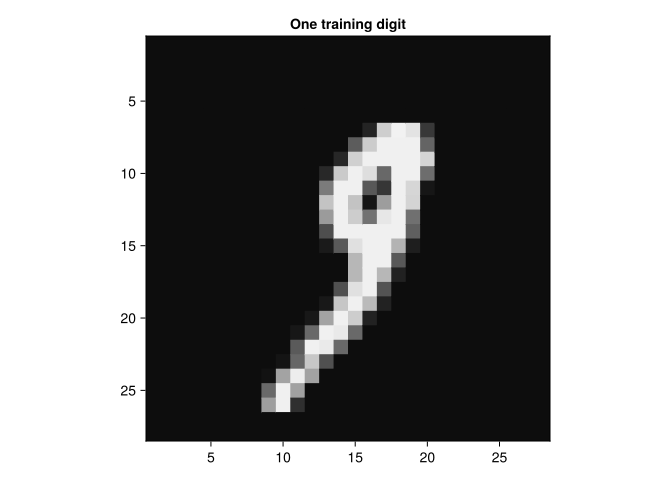
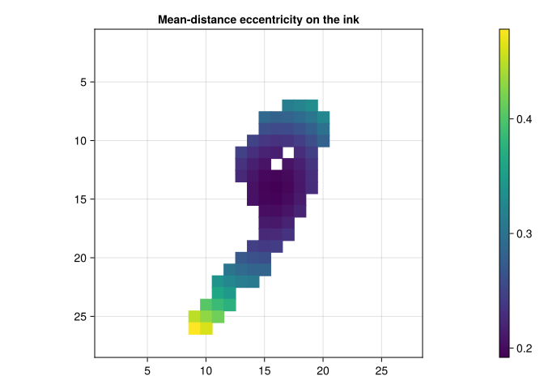
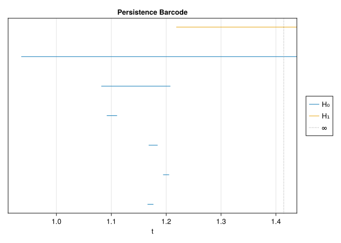
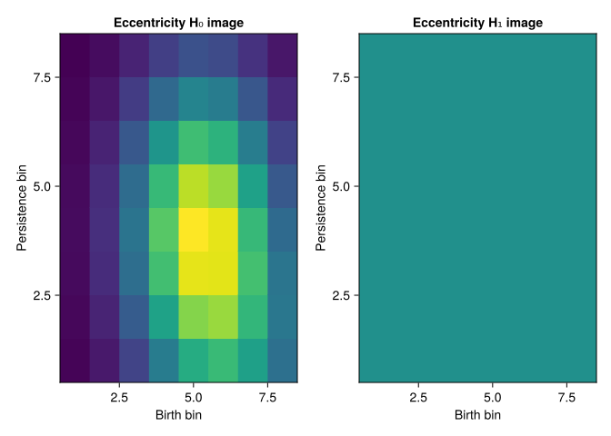
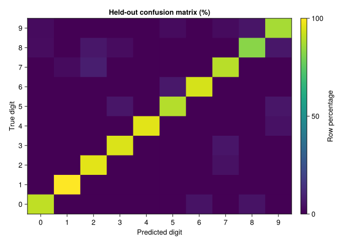

import MLDatasets
using Images: Gray, mosaicview
using CairoMakie
using Distances
using TDARipserer, TDAPersistenceDiagrams, TDAplots
using Statistics, Random
using DataFrames
using Flux15 Classifying hand-written digits
“Thank God for giving you a glimpse of heaven, but do not imagine yourself a bird because you can flap your wings.”
— Alfred de Musset, The Confession of a Child of the Century
Can topology help tell a 6 from a 9? Both often have one hole. A useful answer needs more than counting holes: we must decide which geometry to keep, build comparable features, and test the resulting model on digits it has never seen.
Our experiment starts with eccentricity, a function derived from pairwise distances, then adds directional sweeps. We compare these topological features with a simple classifier on raw pixels. The point is to learn what the representation contributes, not to claim a competitive MNIST benchmark.
15.1 Data, seeds, and a held-out test set
MNIST provides 60,000 training and 10,000 test images, each \(28\times28\) pixels. To keep a CPU render bounded, use 1,000 training images, 200 validation images drawn from the training split, and 300 images from the official test split. The first load downloads the dataset if needed; the code explicitly accepts that dataset download.
The training set fits the persistence-image grids, feature scaling, and classifier weights. The validation set checks those choices. The test set is used at the end, once the choices are fixed. Looking at test mistakes and then changing the model turns that set into development data; a new held-out evaluation would be needed.
n_train, n_validation, n_test = 1_000, 200, 300
train_pixels, train_labels = withenv("DATADEPS_ALWAYS_ACCEPT" => "true") do
MLDatasets.MNIST(split = :train)[:]
end
rng = MersenneTwister(2026)
selected = randperm(rng, length(train_labels))[1:(n_train + n_validation)]
train_ids = selected[1:n_train]
validation_ids = selected[(n_train + 1):end]
# Transpose once so array row/column coordinates match the displayed orientation.
as_figures(pixels, ids) = [Matrix(pixels[:, :, i]') for i in ids]
training_figs = as_figures(train_pixels, train_ids)
validation_figs = as_figures(train_pixels, validation_ids)
y_train = Int.(train_labels[train_ids])
y_validation = Int.(train_labels[validation_ids])
mosaicview([Gray.(fig) for fig in training_figs[1:100]]; nrow = 10, rowmajor = true)![]()
Larger subsets improve the experiment but increase the cost of five filtrations per image and the associated feature transformations. Start here, record the runtime on your machine, and increase the sizes gradually. Training on all 60,000 images is an optional experiment, not a promise of a few seconds.
15.2 Preparing for war
A 0, 6, or 9 often has one hole; an 8 often has two. Handwriting can break these rules. Foreground connectivity also varies with broken strokes, isolated specks, and thresholding. A Rips filtration on ink pixels would contain useful geometry, but an isotropic metric alone cannot tell an exactly rotated 6 from its 9-shaped counterpart.
Instead we use a cubical grid with functions on the ink. First choose a single foreground threshold and keep it fixed across every filtration and split:
foreground_threshold = 0.3
foreground(fig) = fig .>= foreground_threshold
function plot_digit(fig; title = "Digit")
f = Figure(size = (300, 300))
ax = Axis(f[1, 1]; title = title, aspect = DataAspect(), yreversed = true)
heatmap!(ax, permutedims(fig); colormap = :grays)
f
end
plot_digit(training_figs[5]; title = "One training digit")┌ Warning: Found `resolution` in the theme when creating a `Scene`. The `resolution` keyword for `Scene`s and `Figure`s has been deprecated. Use `Figure(; size = ...` or `Scene(; size = ...)` instead, which better reflects that this is a unitless size and not a pixel resolution. The key could also come from `set_theme!` calls or related theming functions. └ @ Makie ~/.julia/packages/Makie/UjJJY/src/scenes.jl:238

This threshold changes which strokes and holes exist. It is part of the model, not harmless housekeeping. Use validation data to investigate alternative thresholds; do not tune it on the final test images.
15.2.1 Eccentricity
We use mean-distance eccentricity,
\[ e(x)=\frac{1}{N}\sum_{y\in X}d(x,y), \]
on foreground coordinates normalized to the unit square. This differs from the maximum-distance definition also called eccentricity in graph theory. A point far from much of the ink tends to have a high value. It often highlights stroke extremities, but it does not literally count edges.
function eccentricity(fig)
mask = foreground(fig)
ids = findall(mask)
values = zeros(Float64, size(fig))
isempty(ids) && return values
coordinates = [Float64(idx[k] - 1) / 27 for k in 1:2, idx in ids]
distances = pairwise(Euclidean(), coordinates)
means = vec(mean(distances; dims = 1))
for (idx, value) in zip(ids, means)
values[idx] = value
end
values
end
example_fig = training_figs[5]
example_eccentricity = eccentricity(example_fig)
f = Figure()
ax = Axis(f[1, 1], title = "Mean-distance eccentricity on the ink", aspect = DataAspect(), yreversed = true)
visible_values = ifelse.(foreground(example_fig), example_eccentricity, NaN)
hm = heatmap!(ax, permutedims(visible_values))
Colorbar(f[1, 2], hm)
f┌ Warning: Found `resolution` in the theme when creating a `Scene`. The `resolution` keyword for `Scene`s and `Figure`s has been deprecated. Use `Figure(; size = ...` or `Scene(; size = ...)` instead, which better reflects that this is a unitless size and not a pixel resolution. The key could also come from `set_theme!` calls or related theming functions. └ @ Makie ~/.julia/packages/Makie/UjJJY/src/scenes.jl:238

15.2.2 Superlevels, foreground, and background
To grow from high eccentricity toward low eccentricity, turn superlevels into sublevels. Use \(g=C-e\), where \(C=\sqrt2\) is a common bound for distances in the unit square. Then \(g\leq a\) means \(e\geq C-a\).
Give background vertices value \(C+1\) and stop at threshold \(C\). They never enter. In this package, grid values belong to vertices and cells enter at the maximum of their vertex values. This is a cubical interpretation of the foreground mask, not a collection of solid squares for every bright pixel. In particular, diagonal pixel contacts and thin strokes deserve inspection.
empty_pd(k) = PersistenceDiagram(Tuple{Float64, Float64}[]; dim = k)
function digit_diagrams(fig, value_function, ceiling)
mask = foreground(fig)
any(mask) || return [empty_pd(0), empty_pd(1)]
values = value_function(fig)
grid = fill(ceiling + 1.0, size(fig))
grid[mask] .= ceiling .- values[mask]
# cutoff removes bars of persistence ≤ 0.01; it is not a significance test.
ripserer(Cubical(grid; threshold = ceiling), dim_max = 1, cutoff = 0.01)
end
example_pd = digit_diagrams(example_fig, eccentricity, sqrt(2.0))
barcode_plot(example_pd)┌ Warning: Found `resolution` in the theme when creating a `Scene`. The `resolution` keyword for `Scene`s and `Figure`s has been deprecated. Use `Figure(; size = ...` or `Scene(; size = ...)` instead, which better reflects that this is a unitless size and not a pixel resolution. The key could also come from `set_theme!` calls or related theming functions. └ @ Makie ~/.julia/packages/Makie/UjJJY/src/scenes.jl:238

Finite \(H_0\) intervals describe components that merge during the sweep. An \(H_1\) class describes a loop, not an individual stroke or edge. Bars that reach the threshold remain alive on the completed foreground mask; the background was never added to fill them. We retain the numbers of these surviving components and loops as two extra features, because persistence images alone ignore infinite intervals.
levels = range(0, sqrt(2.0); length = 10)
frames = [Gray.(foreground(example_fig) .&
(sqrt(2.0) .- example_eccentricity .<= level)) for level in levels]
mosaicview(frames; nrow = 2, rowmajor = true, npad = 8)
Read the mosaic from early to late. Components appear near high-value extremities and join as more ink enters. The final foreground can contain multiple connected components or holes, depending on the handwriting.
15.3 Five filtrations, fitted once
Eccentricity depends only on the metric, so translations, rotations, and reflections preserve its values for exactly isometric foreground samples. The cubical filtration also uses grid adjacency: grid-preserving isometries retain it exactly, while arbitrary image rotations require resampling and can change the foreground topology. A handwritten 6 and 9 are not always exactly isometric, but directional features can help where eccentricity loses a useful distinction.
Four coordinate functions add sweeps from opposite vertical and horizontal directions. Coordinates are normalized to \([0,1]\), so all images use the same units.
function directional_values(fig; axis = 1, reverse = false)
[reverse ? 1 - (idx[axis] - 1) / 27 : (idx[axis] - 1) / 27
for idx in CartesianIndices(fig)]
end
filtrations = [
(name = "Eccentricity", f = eccentricity, ceiling = sqrt(2.0)),
(name = "Vertical", f = fig -> directional_values(fig; axis = 1), ceiling = 1.0),
(name = "Horizontal", f = fig -> directional_values(fig; axis = 2), ceiling = 1.0),
(name = "Reverse vertical", f = fig -> directional_values(fig; axis = 1, reverse = true), ceiling = 1.0),
(name = "Reverse horizontal", f = fig -> directional_values(fig; axis = 2, reverse = true), ceiling = 1.0),
]
function fit_digit_image(diagrams, ceiling; resolution = 8, sigma = 0.08)
if any(isfinite, Iterators.flatten(diagrams))
PersistenceImage(diagrams; size = resolution, sigma = sigma)
else
# Empty or essential-only training collection: a known, shared domain.
PersistenceImage((0.0, ceiling), (0.0, ceiling); size = resolution, sigma = sigma)
end
end
function fit_digit_vectorizers(diagrams, ceiling)
(h0 = fit_digit_image(first.(diagrams), ceiling),
h1 = fit_digit_image(last.(diagrams), ceiling))
end
function digit_features(diagrams, vectorizers)
vectors = [Float32.([
vec(vectorizers.h0(pd[1]));
vec(vectorizers.h1(pd[2]));
count(bar -> !isfinite(bar), pd[1]);
count(bar -> !isfinite(bar), pd[2])
]) for pd in diagrams]
reduce(hcat, vectors) # rows are features; columns are images
end
training_diagrams = [[digit_diagrams(fig, spec.f, spec.ceiling) for fig in training_figs]
for spec in filtrations]
vectorizers = [fit_digit_vectorizers(pds, spec.ceiling)
for (pds, spec) in zip(training_diagrams, filtrations)]
training_features = [digit_features(pds, fitted) for (pds, fitted) in zip(training_diagrams, vectorizers)]
function transform_digits(figures, specifications, fitted_vectorizers)
@assert length(specifications) == length(fitted_vectorizers) == 5
[digit_features([digit_diagrams(fig, spec.f, spec.ceiling) for fig in figures], fitted)
for (spec, fitted) in zip(specifications, fitted_vectorizers)]
end
validation_features = transform_digits(validation_figs, filtrations, vectorizers)
@assert all(size(train, 1) == size(validation, 1)
for (train, validation) in zip(training_features, validation_features))
for fitted in vectorizers, (k, image) in enumerate((fitted.h0, fitted.h1))
@assert all(iszero, image(empty_pd(k - 1)))
@assert all(iszero, image(PersistenceDiagram([(0.0, Inf)]; dim = k - 1)))
end
println("Features per filtration: ", [size(X, 1) for X in training_features])Features per filtration: [130, 130, 130, 130, 130]Each of the five fitted pairs is stored in vectorizers. Validation and test images must reuse those exact objects. Refitting a new grid on a held-out collection would change the meanings of the coordinates consumed by the trained model.
The resolution is 8 bins per direction, unless the fitted birth range collapses to one column. Gaussian width 0.08 smooths in our normalized filtration units. The default weight suppresses short-persistence points near the diagonal (Adams et al. 2017). These are modest starting choices. Their effect should be evaluated on validation data, including possible test diagrams outside the fitted range.
fitted = vectorizers[1]
f = Figure(size = (650, 300))
ax0 = Axis(f[1, 1], title = "Eccentricity H₀ image", xlabel = "Birth bin", ylabel = "Persistence bin")
ax1 = Axis(f[1, 2], title = "Eccentricity H₁ image", xlabel = "Birth bin", ylabel = "Persistence bin")
heatmap!(ax0, permutedims(fitted.h0(example_pd[1])))
heatmap!(ax1, permutedims(fitted.h1(example_pd[2])))
f┌ Warning: Found `resolution` in the theme when creating a `Scene`. The `resolution` keyword for `Scene`s and `Figure`s has been deprecated. Use `Figure(; size = ...` or `Scene(; size = ...)` instead, which better reflects that this is a unitless size and not a pixel resolution. The key could also come from `set_theme!` calls or related theming functions. └ @ Makie ~/.julia/packages/Makie/UjJJY/src/scenes.jl:238

An image can be zero even when the digit has a surviving hole: its separate final-loop count records that information.
15.4 Classifiers and baselines
We compare three predefined models: eccentricity features alone, all five filtrations, and a linear classifier on raw grayscale pixels. Also report the majority-label baseline. All models use the same training and validation images.
Fit feature scaling on training columns only. Features that never vary receive scale 1, avoiding division by zero. The same mean and scale transform validation and test columns.
function fit_scaling(X)
μ = mean(X; dims = 2)
σ = std(X; dims = 2, corrected = false)
σ = ifelse.(σ .> 1f-6, σ, 1f0)
(μ = μ, σ = σ)
end
scale_features(X, fitted) = Float32.((X .- fitted.μ) ./ fitted.σ)
# The completed foreground is identical across sweeps, so keep its two counts once.
combine_filtrations(features) = vcat(features[1],
[X[1:(end - 2), :] for X in features[2:end]]...)
X_eccentricity = training_features[1]
X_all = combine_filtrations(training_features)
eccentricity_scaling = fit_scaling(X_eccentricity)
all_scaling = fit_scaling(X_all)
X_eccentricity = scale_features(X_eccentricity, eccentricity_scaling)
X_all = scale_features(X_all, all_scaling)
V_eccentricity = scale_features(validation_features[1], eccentricity_scaling)
V_all = scale_features(combine_filtrations(validation_features), all_scaling)
raw_features(figures) = Float32.(reduce(hcat, vec.(figures)))
X_pixels, V_pixels = raw_features(training_figs), raw_features(validation_figs)
function train_classifier(X, labels; nonlinear = true, seed = 1, epochs = 20)
Random.seed!(seed)
model = nonlinear ? Chain(Dense(size(X, 1) => 64, relu), Dense(64 => 10)) :
Chain(Dense(size(X, 1) => 10))
targets = Flux.onehotbatch(labels, 0:9)
loader = Flux.DataLoader((X, targets); batchsize = 64, shuffle = true)
optimizer = Flux.setup(Flux.Adam(0.001), model)
for epoch in 1:epochs
Flux.train!(model, loader, optimizer) do m, x, y
Flux.logitcrossentropy(m(x), y)
end
end
model
end
model_eccentricity = train_classifier(X_eccentricity, y_train; seed = 11)
model_all = train_classifier(X_all, y_train; seed = 12)
model_pixels = train_classifier(X_pixels, y_train; nonlinear = false, seed = 13)
predict_labels(model, X) = Int.(Flux.onecold(model(X), 0:9))
accuracy(model, X, y) = mean(predict_labels(model, X) .== y)
majority_label = argmax([count(==(label), y_train) for label in 0:9]) - 1
validation_results = DataFrame(
Model = ["Majority label", "Raw pixels, linear", "Eccentricity, ReLU", "Five filtrations, ReLU"],
Training_accuracy = [mean(y_train .== majority_label),
accuracy(model_pixels, X_pixels, y_train), accuracy(model_eccentricity, X_eccentricity, y_train),
accuracy(model_all, X_all, y_train)],
Validation_accuracy = [mean(y_validation .== majority_label),
accuracy(model_pixels, V_pixels, y_validation), accuracy(model_eccentricity, V_eccentricity, y_validation),
accuracy(model_all, V_all, y_validation)])
validation_results4×3 DataFrame
| Row | Model | Training_accuracy | Validation_accuracy |
|---|---|---|---|
| String | Float64 | Float64 | |
| 1 | Majority label | 0.115 | 0.065 |
| 2 | Raw pixels, linear | 0.924 | 0.895 |
| 3 | Eccentricity, ReLU | 0.681 | 0.715 |
| 4 | Five filtrations, ReLU | 0.981 | 0.9 |
The relu activation makes the topological classifiers nonlinear. Without an activation, two stacked dense layers compose to an affine map. Persistence features themselves are nonlinear functions of the original image; that is a separate issue from the classifier’s architecture.
Read the table before judging the result. Does adding directional information help on validation data? Is the training/validation gap larger? How strong is the raw-pixel baseline? The answer is measured by this run; more features do not guarantee an improvement. The small samples and fixed 20-epoch training schedule make this an illustrative comparison.
15.5 The held-out test
Now freeze the entire pipeline. Load a reproducible subset of the official test split, compute the five filtrations, and reuse all five training vectorizer pairs and both training scaling objects.
test_pixels, test_labels = withenv("DATADEPS_ALWAYS_ACCEPT" => "true") do
MLDatasets.MNIST(split = :test)[:]
end
test_ids = randperm(MersenneTwister(2027), length(test_labels))[1:n_test]
test_figs = as_figures(test_pixels, test_ids)
y_test = Int.(test_labels[test_ids])
test_features = transform_digits(test_figs, filtrations, vectorizers)
@assert all(size(train, 1) == size(test, 1)
for (train, test) in zip(training_features, test_features))
T_eccentricity = scale_features(test_features[1], eccentricity_scaling)
T_all = scale_features(combine_filtrations(test_features), all_scaling)
T_pixels = raw_features(test_figs)
results = copy(validation_results)
results.Test_accuracy = [mean(y_test .== majority_label),
accuracy(model_pixels, T_pixels, y_test), accuracy(model_eccentricity, T_eccentricity, y_test),
accuracy(model_all, T_all, y_test)]
results4×4 DataFrame
| Row | Model | Training_accuracy | Validation_accuracy | Test_accuracy |
|---|---|---|---|---|
| String | Float64 | Float64 | Float64 | |
| 1 | Majority label | 0.115 | 0.065 | 0.07 |
| 2 | Raw pixels, linear | 0.924 | 0.895 | 0.9 |
| 3 | Eccentricity, ReLU | 0.681 | 0.715 | 0.67 |
| 4 | Five filtrations, ReLU | 0.981 | 0.9 | 0.916667 |
In the seeded run, eccentricity features give about 67% test accuracy, the five-filtration model about 91.7%, and the raw-pixel linear baseline 90%. Directional information helps substantially relative to the eccentricity descriptor in this experiment. The smaller difference from raw pixels needs more evidence before we claim an advantage.
These fractions estimate performance on this held-out subset, with sampling uncertainty. At 300 images, one extra error changes accuracy by about 0.33 percentage points. Avoid reading a small difference as a definitive ranking; repeat a predefined evaluation on larger independent samples when the distinction matters.
15.5.1 Where does the five-filtration model fail?
A confusion matrix keeps all ten labels even when a subset contains no example or prediction of a class. Rows below are true labels; columns are predicted labels. Each nonempty row is normalized to 100%.
y_pred = predict_labels(model_all, T_all)
confusion = zeros(Int, 10, 10)
for (actual, predicted) in zip(y_test, y_pred)
confusion[actual + 1, predicted + 1] += 1
end
row_percentages = 100 .* confusion ./ max.(sum(confusion; dims = 2), 1)
f = Figure(size = (600, 500))
ax = Axis(f[1, 1], title = "Held-out confusion matrix (%)", xlabel = "Predicted digit", ylabel = "True digit",
xticks = (1:10, string.(0:9)), yticks = (1:10, string.(0:9)))
hm = heatmap!(ax, permutedims(row_percentages); colorrange = (0, 100))
Colorbar(f[1, 2], hm, label = "Row percentage")
f┌ Warning: Found `resolution` in the theme when creating a `Scene`. The `resolution` keyword for `Scene`s and `Figure`s has been deprecated. Use `Figure(; size = ...` or `Scene(; size = ...)` instead, which better reflects that this is a unitless size and not a pixel resolution. The key could also come from `set_theme!` calls or related theming functions. └ @ Makie ~/.julia/packages/Makie/UjJJY/src/scenes.jl:238

Inspect the largest off-diagonal entries and their example counts. A high error percentage on a class represented by only a few samples is especially uncertain.
errors = findall(y_pred .!= y_test)
println("Test errors: ", length(errors), " of ", length(y_test))
if !isempty(errors)
error_ids = errors[1:min(9, length(errors))]
println([(true_label = y_test[i], predicted_label = y_pred[i]) for i in error_ids])
mosaicview([Gray.(test_figs[i]) for i in error_ids]; nrow = 3, rowmajor = true)
endTest errors: 25 of 300
[(true_label = 8, predicted_label = 9), (true_label = 8, predicted_label = 3), (true_label = 7, predicted_label = 1), (true_label = 8, predicted_label = 2), (true_label = 9, predicted_label = 8), (true_label = 7, predicted_label = 2), (true_label = 7, predicted_label = 2), (true_label = 9, predicted_label = 8), (true_label = 9, predicted_label = 0)]![]()
A mistaken label can result from a broken stroke, an unusual orientation, a small foreground hole, an unsuitable filtration, or limited training data. Look at the actual image before blaming the writer. To develop another filter, use training or validation mistakes and preserve an untouched test set.
15.6 Predict before running
- Why might eccentricity confuse an ideal rotated 6 with a 9?
TipAnswer
A rotation preserves pairwise Euclidean distances and hence mean-distance eccentricity. The corresponding cubical representation also depends on the grid, but an exact grid-preserving rotation retains the filtration. Directional functions deliberately preserve orientation information that the metric-only function loses.
- A test diagram has a larger birth range. Should you fit a fresh persistence-image grid on the test collection?
TipAnswer
No. The model’s coordinates were defined by the training grid. Reuse it, report range drift, and reconsider the domain using development data if necessary. A new held-out evaluation is needed after changing the pipeline.
- A foreground loop survives at the threshold. Where is that information in our features?
TipAnswer
Its infinite interval is ignored by the persistence image, but the final \(H_1\) count records it. Background vertices never enter this filtration. The endpoint is an observation boundary, not a measured death.
The representation is the main lesson: invariance can help remove nuisances, but it can also remove the distinction needed for a label. Directional topology, grayscale pixels, and other descriptors can complement one another. A useful next experiment combines topological features with a pixel model, then compares it with both baselines under the same held-out protocol.